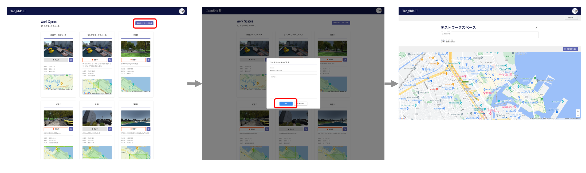
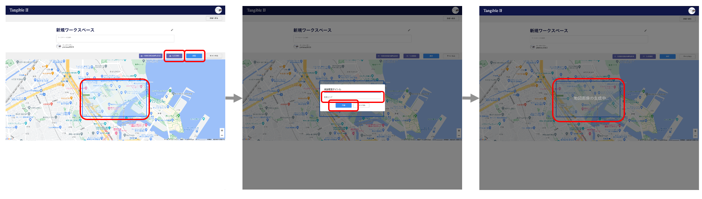

操作マニュアル
1 本書について
本書では、PLATEAU TANGIBLE WEBアプリ（以下「本システム」という。）の操作手順について記載しています。
2 操作方法
本アプリでは、地図上の範囲、使用するタンジブルユニット、使用するタンジブル駒を関連付けたまとまりを「ワークスペース」と呼んでいます。
ログインユーザーはワークスペースを作成したり、スナップショットを登録したりすることができます。ここでは、本アプリの主な操作であるワークスペースの作成方法とスナップショットの作成方法を解説します。
ワークスペースの作成
- ログイン後、「新規ワークスペース作成」ボタンを押して、ワークスペースを作成します。

以降の操作は、検討範囲ごとに繰り返します。
- 連携させるタンジブルユニットを指定します
- 地図上を指定して検討範囲を設定します

- 使用するタンジブル駒を指定します

スナップショットの作成
- ワークスペースの画面から「VRモード」ボタンを押して、VRモードを起動します
- 「スナップショット作成」ボタンを押します
- タイトルとコメントを入力して「保存」して完了です。
API
アプリのデプロイに成功すると、APIが使えるようになります。用意されているAPIの種類や仕様についてはAPI ドキュメントを参照してください。